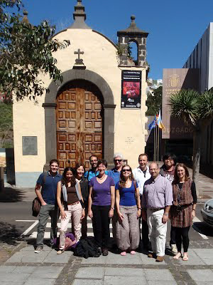
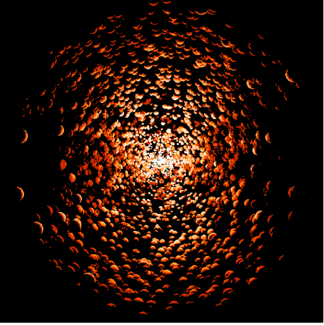
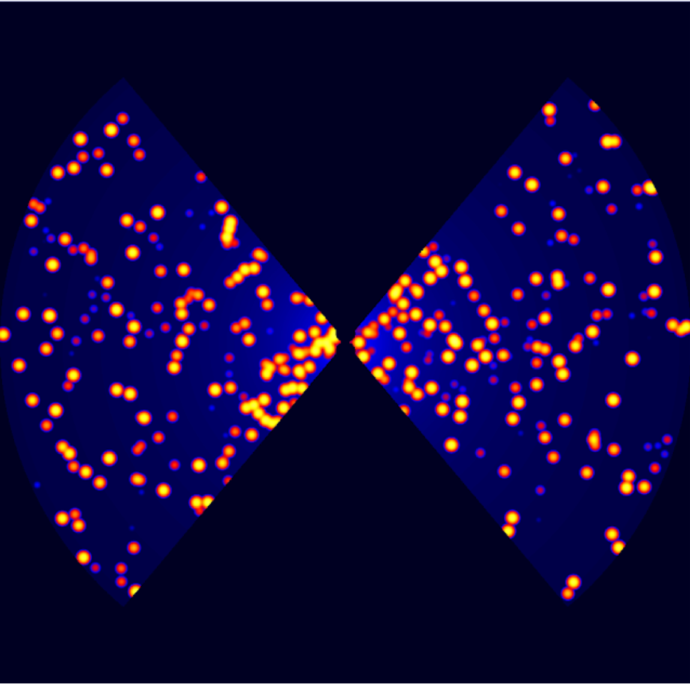
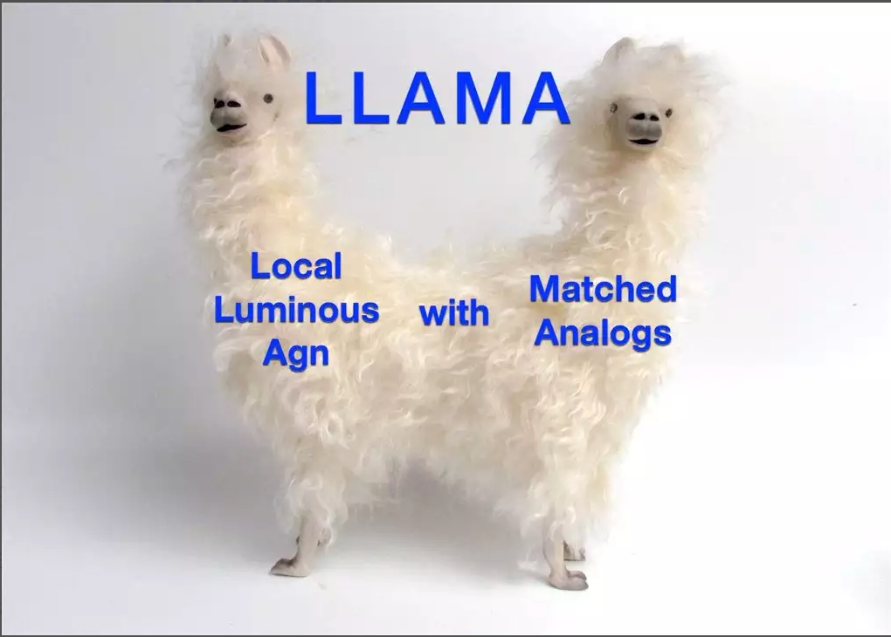

Discover Collaborative Efforts
Collaborative projects involving GATOS.
PIRATAS
PIRATAS (Panoramic Imaging of Radio Sources in AGN using Transverse Atmospheric Survey) is a project focused on observing radio sources associated with active galactic nuclei (AGN) using a wide-field imaging approach. The collaboration aims to enhance the understanding of the large-scale structure and properties of AGN by utilizing transverse atmospheric survey techniques.

CAT3D/CAT3D-WIND
CAT3D (Clumpy AGN Torus Models) is a collaboration that develops and utilizes three-dimensional clumpy torus models to study the infrared emission from the dusty tori surrounding AGN. These models help in interpreting observational data, providing insights into the geometry and physical conditions of the dust in the nuclear regions of AGN.

SKIRTOR
SKIRTOR (SKIRT-based Torus Models) is a project that uses the radiative transfer code SKIRT to create detailed models of the dusty tori around AGN. These models are used to fit the spectral energy distributions (SEDs) of AGN and to understand the impact of the dusty environment on the observed properties of AGN.

LLAMA
This is a survey lead by Ric Davies to observe a sample of 39 galaxies.
